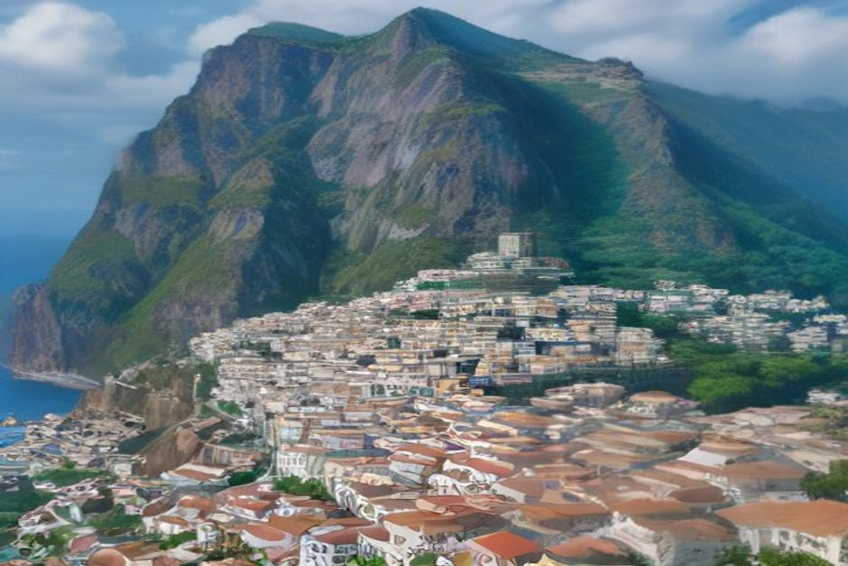
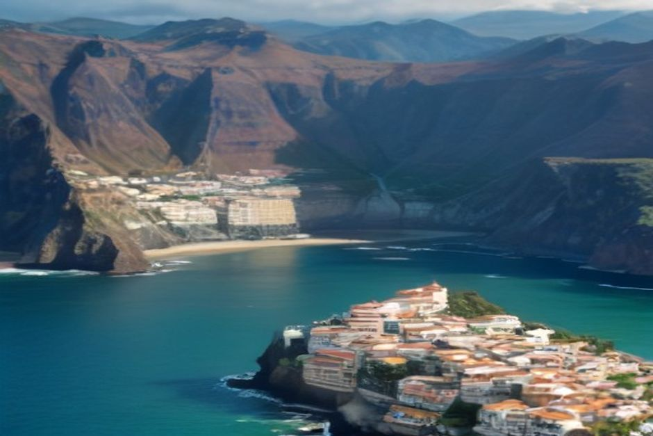

Vous hésitez à réserver Madeira, ou vous venez de le faire et vous voulez savoir à quoi vous attendre ? La réponse courte : oui, Madère est une destination très sûre pour les Français, les Belges et les Suisses. Les vrais risques n'ont rien à voir avec la délinquance. Ils tiennent au relief, à la pluie et à l'Atlantique. Voici ce qui compte, point par point.
Madère est-elle sûre ? La réponse en quelques lignes
Oui. Le Portugal figure régulièrement parmi les dix pays les plus sûrs du monde au Global Peace Index, et Madère profite de cette réputation. Les violences envers les touristes sont rares, la police est visible et plutôt bienveillante autour de Funchal et des principales zones touristiques, et la grande majorité des séjours se passent sans le moindre incident.
Ce qui peut gâcher un séjour à Madère, c'est autre chose : une route de montagne prise trop vite, un sentier glissant après la pluie, une crique où la houle monte. Autrement dit, le terrain. Le reste de cet article vous aide à le prendre au sérieux sans vous gâcher le plaisir.
Côté formalités, rien d'exotique : Madère est portugaise, donc européenne. On y paie en euros et le 112 fonctionne comme chez vous. Enregistrez-le dans votre téléphone avant le décollage.

Voyager seule à Madère : est-ce prudent ?
Oui. Madère est régulièrement citée parmi les destinations européennes les plus tranquilles pour voyager en solo, y compris pour les femmes. Les habitants ont l'habitude de croiser des visiteurs indépendants qui se déplacent à pied, en bus ou en voiture de location.
Les réflexes de n'importe quelle ville européenne suffisent :
- le soir, restez dans les rues bien éclairées de Funchal ;
- gardez votre sac fermé et votre téléphone hors de la poche arrière dans les ruelles animées de la Zona Velha ;
- après la tombée de la nuit, préférez un taxi agréé ou une application de VTC à une voiture sans signalement.
Beaucoup de voyageurs en solo racontent d'ailleurs avoir eu plus de réserves devant un sentier de falaise mouillé que devant une promenade nocturne.
Les trois vrais risques : routes, sentiers, mer
Les incidents viennent presque toujours de trois sources : les routes de montagne, les sentiers exposés et l'imprévisibilité de la mer. Le relief de l'île est spectaculaire : pentes volcaniques raides, falaises à pic, routes qui montent et descendent sans cesse entre le niveau de la mer et les sommets du centre.
C'est ce relief qui fait la beauté de Madère. C'est aussi lui qui surprend ceux qui traitent un lacet de montagne ou un chemin de falaise comme une promenade en bord de mer chez eux. Respectez le terrain et l'île se montre étonnamment douce.
Conduire à Madère : ce qu'il faut savoir
C'est possible si vous êtes à l'aise et attentif, mais les routes restent le premier danger du quotidien. La voie rapide VR1, qui relie Funchal à l'aéroport et à la côte ouest, est moderne et bien conçue. Les routes secondaires ER, en revanche, qui grimpent vers la montagne et suivent la côte nord, sont étroites et pentues, avec des épingles, des tunnels et des virages sans visibilité, souvent un précipice d'un côté.
Quelques conseils concrets :
- on conduit à droite, comme en France, et les voitures de location comme les stations-service sont faciles à trouver ;
- choisissez une petite voiture : elle se gère mieux sur ces routes qu'un gros SUV ;
- évitez les routes de montagne inconnues de nuit ou dans le brouillard ;
- soyez attentif aux cyclistes et aux scooters dans les virages aveugles ;
- comptez large : le temps de trajet réel est presque toujours plus long que ne le suggère la distance sur la carte.
Si l'idée de ces routes vous refroidit, rien ne vous oblige à louer. Une partie de la côte sud se découvre très bien depuis la mer, comme nous l'expliquons plus bas.
Randonnées et levadas : lesquelles sont risquées ?
Certaines, oui, et il vaut mieux le savoir avant de chausser vos baskets. Quelques itinéraires, dont des passages exposés du PR1 vers le Pico do Arieiro et certains anciens chemins de levada, longent des bords de falaise sans garde-corps, traversent des tunnels non éclairés ou passent sur un sol qui devient glissant après la pluie.
Les bons réflexes :
- restez sur les sentiers PR officiels et balisés ;
- consultez le système SIMplifica avant de partir : il signale aussi les fermetures après un glissement de terrain ou des dégâts de tempête ;
- emportez une lampe frontale pour les tunnels ;
- portez de vraies chaussures de marche, pas des sandales ;
- faites demi-tour si le chemin est plus mouillé ou plus étroit que prévu ;
- évitez de partir seul sur les itinéraires les plus exposés.
Pour une première balade sans souci, la marche de Ribeiro Frio à Balcões, facile et familiale, ne présente aucun de ces risques.
Baignade à Madère : où et quand se mettre à l'eau
Tout dépend de l'endroit et du jour. Madère n'a presque pas de plages de sable naturelles. On se baigne surtout dans des criques rocheuses et des piscines naturelles d'origine volcanique, où la houle, les courants et les vagues soudaines peuvent devenir vraiment dangereux sur les sites non surveillés, surtout l'hiver et après une tempête atlantique.
Pour une baignade tranquille, choisissez une plage surveillée par des maîtres-nageurs, comme Praia Formosa ou Calheta : des drapeaux y indiquent les conditions du jour. Les criques ouvertes de la côte sud sont plus calmes et plus claires en été, mais mieux vaut les aborder avec quelqu'un dont le métier est de lire la mer.
C'est le principe de nos sorties à la journée avec baignade : le skipper ne s'arrête pour nager que lorsqu'il a constaté que la crique est abritée et que les conditions sont bonnes, pas selon un horaire fixé d'avance. Si la mer ne s'y prête pas, on ne se baigne pas.
Météo, pluie, séismes : faut-il s'inquiéter ?
Pas du volcan. Madère est une île volcanique endormie, sans éruption connue à l'époque moderne, située dans une zone plutôt stable de l'Atlantique. Les séismes y sont rares et de faible magnitude.
La vraie vigilance concerne la pluie forte. De violents épisodes orageux ont déjà provoqué des crues éclair et des glissements de terrain, notamment en février 2010. Pendant votre séjour, jetez un œil aux alertes de l'IPMA, le service météorologique portugais, et évitez les chemins raides et non goudronnés pendant ou juste après de grosses pluies.
Vols, arnaques, voiture de location : la petite délinquance
La délinquance signalée contre les touristes est faible, sans être nulle. Un vol à la tire opportuniste peut arriver dans les endroits bondés, comme le Mercado dos Lavradores ou les rues de Funchal les jours de fête. Les voitures de location garées sur des parkings isolés de départs de sentiers sont parfois visées quand des objets de valeur sont visibles.
Règle simple : ne laissez jamais sac, appareil photo ou papiers à la vue dans un véhicule garé. Les vraies arnaques sont rares. L'ennui le plus probable est une carte un peu chère dans un restaurant visiblement pensé pour les touristes de passage.

Découvrir la côte sans prendre le volant ni les sentiers
Si vous cherchez une façon simple et rassurante de voir Madère, la mer en est une. Chez Chifbay, le bateau n'est qu'à votre groupe, jusqu'à 5 personnes, avec deux skippers agréés de Madère. Départ de la Marina do Funchal, ponton C. Tarifs pour tout le bateau, jamais par personne ; annulation gratuite jusqu'à 24 heures avant le départ.
- La sortie à la journée, à 10 h ou à 14 h : 2 h 30 jusqu'à Ribeira Brava pour 500 EUR, ou 3 h jusqu'à Ponta do Sol pour 600 EUR. Câmara de Lobos, Cabo Girão, baignade et paddle à la Fajã dos Padres.
- Le coucher de soleil : départ 1 h 15 avant le coucher du soleil, toute l'année. 2 h jusqu'à Cabo Girão pour 400 EUR, ou 2 h 30 jusqu'à Ribeira Brava pour 500 EUR. Sans arrêt baignade.
Repas et boissons à bord sont inclus, ainsi qu'une vidéo 360° Insta360, des images de drone (si la météo le permet) et des photos prises avec un vrai appareil. Pour comparer les options, voyez notre sélection des sorties en bateau à Madère, l'ensemble des expériences ou les infos pratiques.
Un mot d'honnêteté : la météo décide, et nous ne promettons ni dauphins, ni ciel doré, ni grand soleil. Quand ils sont au rendez-vous, c'est un cadeau. Le skipper peut aussi adapter ou reporter la sortie si la mer n'est pas bonne, et c'est précisément pour cela qu'il est là. Les avis de nos passagers en disent plus que nous.
Check-list avant de partir à Madère
- Consultez les alertes IPMA avant toute randonnée ou sortie en mer.
- Réservez à l'avance les sentiers très fréquentés via SIMplifica.
- Portez de bonnes chaussures sur les levadas.
- Ne vous baignez pas dans une crique non surveillée sans avoir vérifié les conditions.
- Verrouillez la voiture et ne laissez rien à la vue près des départs de sentiers.
- Vérifiez que votre assurance voyage couvre bien la randonnée et les activités nautiques.
- Gardez le 112 dans votre téléphone.
Rien de tout cela n'est propre à Madère : c'est la discipline que récompense toute destination de montagne et de mer.
À Madère, le danger n'a jamais été les gens. C'est de sous-estimer une route de montagne, un sentier mouillé ou la houle de l'Atlantique.
Respectez le terrain et la mer, et Madère vous rend l'un des séjours insulaires les plus sûrs et les plus agréables d'Europe : des falaises, de la forêt et un littoral qui valent bien un peu d'attention. Pour d'autres idées de séjour, parcourez notre journal.